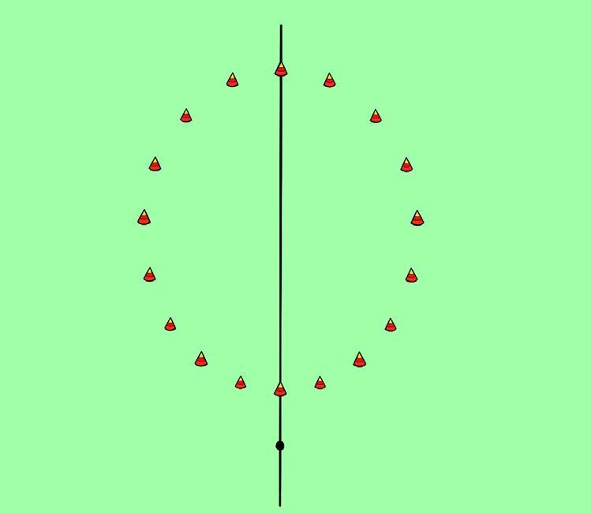
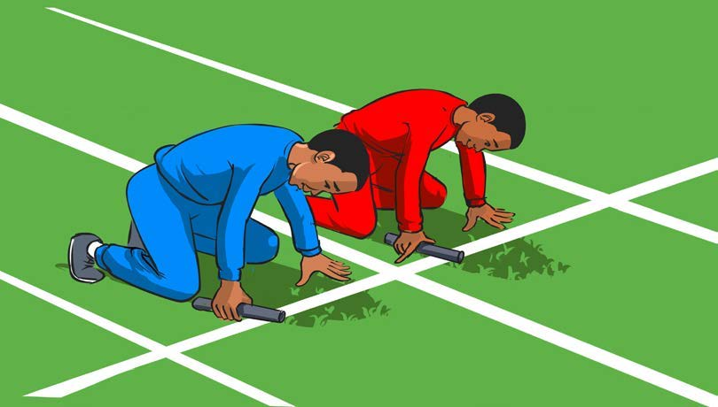
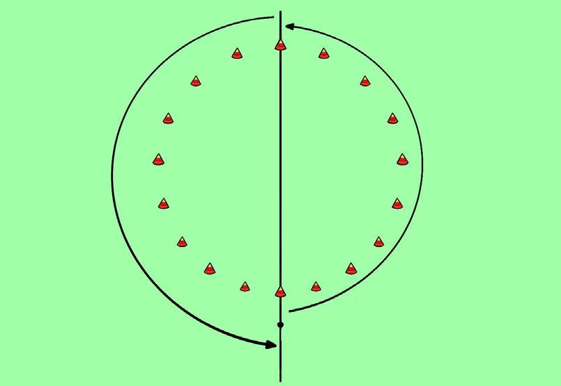
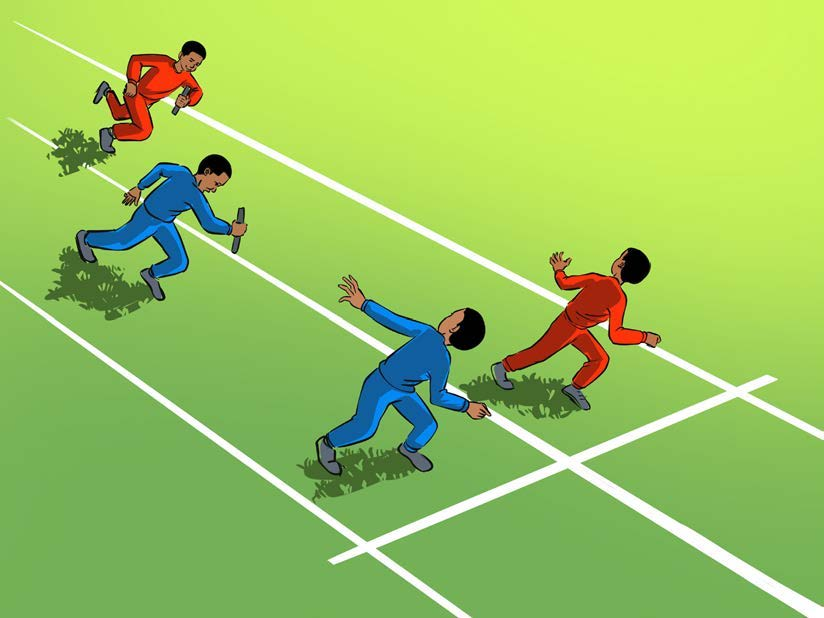
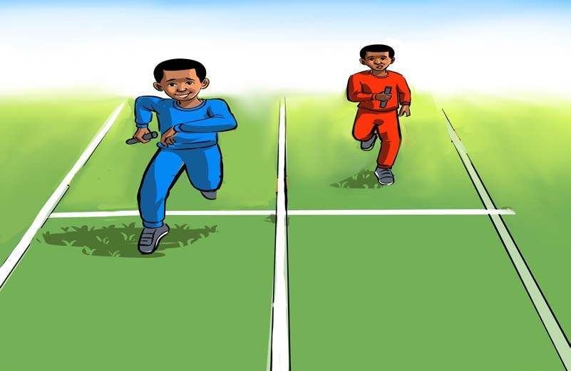

Sura ya Nne · Ninacheza michezo sahili
Mchezo wa kukimbia na kijiti
Mchezo wa kukimbia na kijiti unahusisha timu mbili za wachezaji wawili kila timu. Wachezaji hao hukimbia wakiwa na kijiti mkononi. Wachezaji wa timu moja watapokezana kijiti katikati ya mbio. Mpokeaji wa mwisho atakimbia kuelekea kwenye mstari wa kumalizia.
Namna ya kucheza
- Andaa mwili kwa kufanya mazoezi: tembea harakaharaka na kukimbia taratibu kwa dakika 2 hadi 3; simama na rukaruka mara 10 hadi 15; kisha nyoosha viungo vya mwili kwa dakika 2 hadi 3.
- Unda timu za wachezaji wawili kwa timu moja, kila timu iwe na kijiti kimoja.
- Chora au tumia koni kuunda duara uwanjani lenye kipenyo cha hatua 25.
- Simama na mpinzani wako katika mstari wa kuanzia mkiwa mmeshika kijiti mkononi.
- Hakikisha mwenzako amesimama sehemu ya kubadilishana kijiti upande wa pili wa duara.
- Piga goti kwa mguu mmoja na mikono kushika chini kwenye mstari wa kuanzia.
- Usikiapo amri ya mwamuzi, kimbia kwa kufuata mzunguko wa duara.
- Ukifika sehemu ya kubadilishana vijiti, mpe mwenzio kijiti.
- Mchezaji anayepokea kijiti akimbie kuzunguka sehemu ya duara iliyobaki.
- Mkimbiaji atatakiwa kuvuka mstari wa kumaliza kuashiria kumaliza mchezo.





Timu itakayoshinda ni ile ambayo mchezaji wake atatangulia kumaliza mzunguko akiwa na kijiti mkononi.
Maswali
Shughuli ya kwanza
Chora duara la kuchezea mchezo wa kukimbia kwa kijiti, kisha cheza na wenzako mchezo huo.